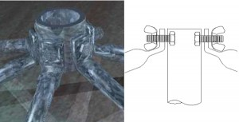
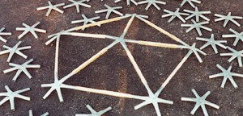
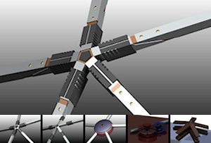
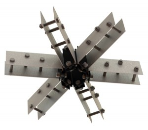
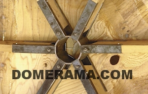

Geodesic Hub Connectors
Steel Pipe and PVC Hub Connectors |
|
| This is the classic way to connect geodesic struts together. A hole is drilled in the flattened ends then bolted together.To accommodate a drilled hole into your struts, the length of the strut needs to be longer.For example a 36 inch pipe/conduit strut will need to be extended at both ends to drill holes. A rule of thumb is to add 2 X 3/4 inch = 1.5 inches (or about 8cm) more to all struts. That means the center of the holes would need to be drilled 3/4″ from each strut end. | |
| The vertex hub is capable of building domes up to 6000 sqft and has the ability to use metal or pvc pipe. The hub itself comes with a reduced section to allow for the use of 1/2″ or 34″ pipe.
These hubs have been manufactured to the perfect angles so you do not need to rely on the flex of the pipe to create the curvature. The hub will flex a bit to allow the use for different frequency domes.The hub uses a friction fit to secure its pipes into place but will have a twist lock feature in place for added reinforcement. All of these hubs come color-coded for ease of installation as well as with a reinforced center to allow for the covering of the dome to be easily attached. Visit http://www.vertexhubs.com for more information. |
|
 |
Geodesic domes made with a metallic frame are the premium versions of greenhouses. they are much sturdier, they last a very long time and are ideal for growing food year-round. Peter Ellis has developed impressive greenhouse designs that you can appreciate for their quality of construction as well as for their pleasing design. He also has designed multiple geodesic hubs, one of which is engineered to be used with square tubes. For more information click here. To visit Peter Ellis’ website, click here. |
| This hub, designed and manufactured by Lotus Domes in the UK has proved successful for medium sized domes (around 8-15m diameter). Powder coated steel poles fix simply into the hub with stainless steel pins. This allows construction of a 10m dome by one person and a ladder, in around 3 hours, from the back of an estate car. This generates considerable savings on the commodities of time, energy and equipment.The design combines the simplicity and strength of geodesics, along with rapid mobility and elegance. The poles used are steel, with solid machined plastic hubs. Each hub is also centered with a lock nut, allowing M12 bolts to be used to fly equipment around the dome.You can view a time lapse assembly of a 3v dome using this gerodesic hub on YouTube. | |
| This is a sophisticated and versatile universal geodesic hub connector invented by Leith Aitchison of Dome Dimensions in Australia. For more information (pictures, diagrams, specifications), click here. | |
| Someone sent Domerama this hub design, made for square steel tubing. Click on the images below to enlarge them. | |
| This is a novel approach to connect PVC or EMT conduit struts together. It was developed by Geoff Maritz in Cape Town, South Africa. He used fence post caps and drilled them. There’s more detailed information on his blog. | |
|  | This is another way to attach geodesic struts together to form a hub. Inexpensive and something you can do yourself, this hub has 5 bolts instead of just one, so very solid. Keep in mind you need to cut your struts accordingly: since connections are vertex to vertex, the total length between centers of the round tube needs to be the length of your strut that was calculated. In other words, your real length will need to be longer because ends are bent. |
|  | This is a clever idea, from www.gardendome.com: pre-bent hubs. The best part is that you slide your struts into the ends without having to flatten or bend struts. Some of the strut materials that might be used:-round wood dowels, square wood with rounded ends -round, square, hexagonal (and other aluminum extrusion) metal tubes -fiberglass poles or carbon/composite poles -pvc or other plastic, hollow tube or solid rod -bamboo |
| This is an example of a geodesic dome cover with a stretched suspended skin. As you can see in the image the cover is made of multiple parts sewn together. | |
| This is one of the geodesic strut hubs on the geodesic dome outside of the U.S. Patent Office in Pensylvania. | |
| This is a prototype of a geodesic hub, Each movable tube is made to self-adjust. | |
| This hub is made to attach flat bars. Each bar is bent to the correct angle then bolts or rivets are inserted. | |
 |
The image on the left is an aluminum geodesic hub from Temcor, a leader in industrial dome construction.This may seem complex, but the engineering is impressive. This hub will not only connect struts together but also serve as a method to hold a metallic covering. |
| These are called Air Hubs, used to connect metal tubing into a hub. | |
|  | These are some renderings of a project Jeffrey Easter is working on to makea full sized “kit” geodesic dome that a class of about 30 middle school kids would assemble in an hour at the National Building Museum. It’s an icosahedron alternate 1, meaning that as a 1/2 sphere dome it will have 26 hubs and 65 rods – 6 5 way hubs, 20 6 way hubs, 30 46 inch rods, and 35 52.5 inch rods. Make sure to visit him! |
 |
Sonostar hardcore geodesic hubs eliminate the tedious task of crafting connectors to build geodesic domes. By using these hubs, you will reduce the time it takes to build a dome from days to just a few hours.The hubs themselves are made of tough, durable polyvinyl chloride (PVC), and they are solid in the centers, adding strength and functionality.When you go to cover your dome, you can attach it directly to the hubs themselves by screwing into them, without compromising the strength of the hub. They are engineered specifically for building geodesic domes – designed with a 10 degree curvature to naturally shape the dome as you build it. |
| Domekit.cc is a project looking to make dome building simple and fun. They developed a hub connector featuring a robust ball-and-socket joint and an integrated thumbscrew that securely locks the strut to the node.These 3D-printed connectors are made in small batches in workshops and garages across the USA by fabricators with open-source 3D printers like the Makerbot. The principal fabricator for the 3D-printed connectors is Mark Cohen, who operates five 3D printers out of his garage in Brooklyn: | |
Wood hub connectors |
|
| Matt Lowry from domemade offers a hub system which he proudly describes as great timesaver. Comprising of a series of laser cut stainless steel brackets, the domemade hub system can be used to construct a geodesic dome of any size. There`s no maths to perform you just alter the lengths of your wood accordingly.The hub system is then connected to the wooden struts using four types of nuts and bolts. There is no need for complex maths calculating angles and ratios with this hub. The bracket simply forms the correct shape as you build the dome. The hub system is ideal for shipping as it packs away in to a small box and has a lower cost than most other systems of this type.Click on images below to enlarge. | |
| One of the simplest and best wooden dome hub system, the pipe-section hubs and stainless steel strap tightened with a banding device. This was developed by Fletcher Pence the Virgin Islands in the early ’60s and was strong and elegant. Used by architect Jeffery Lindsay in L. A. and Pacific High School for 10 wood-framed domes in the early ’70s.In Domebook 2, on page 40, you can read about the Aspen Dome for which this geodesic hub is used. The description on how to make and use this hub technique for a 70-foot elliptical geodesic dome is as follows:” 2″ X 10″ construction Douglas grade fir, ripped down to 2″ X 5″. Construction grade is adequate structurally if the knots are tight… struts were cut with a radial arm saw and 3/4″ holes drilled 3″from each end…. The steel pipe was cut into 4″ pieces. I picked up a 5/8″ steel band-it strap and strappers… “” Our first test failed. We then used the experience of Jeff Morse (Domebook 2 page 51), and added 1/8″ steel plates on the end to prevent the wood from being crushed by the pipe (we did not cope the ends of the wood. And 3/4″ steel half round to prevent the strap from compressing the wood at the drilled holes. With these additions the connection was extremely rigid and strong and gave us a great deal of confidence the dome would work” | |
| T-blocking hub method. This is an improvement of the strap method by connecting all struts together. As you can see from the image, this solution is elegant and simple, in addition to requiring only basic skills to reinforce hubs. | |
| It is the hub design by Андрей Савельев, or Andrei Saveliev. He is a design engineer from Moscow and an major participant on the domesworld.ru forums. For more information and images, click here. | |
|  | This hub design being produced in Russia is going through some serious tests in the summer of 2012. Its designer is Pavel Brayvo (Павел Брайво-geosota.ru) is the designer of the domesworld.ru forum.The results of these tests will be available to the public on the domesworld.ru forum.As many pointed out, It is really extraordinary what people on that forum are achieving, like this design, an idea born on the forum that ends up in production.It is a good example for every geodesic community in the world..The hub is produced by geosota.ru. Click on the images below for larger images. |

 Marko Pejović and Branislav Čolovićm have been developing very smart and simple to use hub designs.You can view a video on a universal hub that can be asembled and disassembled quickly at
Marko Pejović and Branislav Čolovićm have been developing very smart and simple to use hub designs.You can view a video on a universal hub that can be asembled and disassembled quickly at
http://www.youtube.com/watch?v=dxTAcFfF99Y .You can also view their first attempt showing that universal connector is possible: http://www.youtube.com/watch?v=EdlHfOXxY7E .As they also pointed out, take the time to visit http://forum.domesworld.ru/ for innovative designs and ideas for geodesic domes. The website can be easily translated with Google Translate.This type of hub is often seen in building bamboo domes. A star-shaped hub with its ends inserted into a bamboo strut. Then a bolt is inserted through the bamboo and the metal hub. Notice how the bamboo tips are protected with a metal cap. For more information on this specific hub, a detailed profile of the Mechai Patana Secondary School can be viewed on their website at http://mechaifoundation.org/school.asp.This original hub design is from a Japanese designer. For more information, pictures and videos, click here.Sergio Cohen Arazi contributed this hub design. He is a geodesic home and structure builder in South America (see his website links below).You just need to do a metal “U”, could be a bent bar, a square tube cut into slices or stamped in metal.
With those “U” shapes you can use them on any frequency dome and hub, simply by combining them and welding them together.For those who want quick practical solutions for their project, look at the picture on the left. It’s a simple disc with holes drilled into it to insert screws in each strut. Note that any hub will be angled differently at each hub, so some flexibility with the disc is needed so it flattens against the strut when you screw.The classic way to connect geodesic wood struts together is to cut the angles directly on each piece. But because any strut requires 2 angles cut at each end you need to make what is called a “compound angle cut”. Use a radial arm saw, a miter saw with the stops removed or a worm drive saw. If possible, angle cut precision should be to a tenth of a degree.Very straightforward design of a geodesic hub made of metal. In most dome constructions you will require a combination of 4-way, 5-way and 6-way connector hubs and you will need to cut each strut end to the correct angle.This is the Starplate system offered by Stromberg’s. Starplates are steel plates, with channels to hold 2×2′s, 2×3′s or 2×4′s. You simply drill holes in each end of 25 struts of equal length and bolt them into the 11 star plates to build a solid, mini-dome framework in a couple of hours.Another prototype drawing of a geodesic dome connector. Very good idea though the tabs holding each strut would need to be wider for larger domes.DynaDome connector hub. this system developed by Bill Woods of Dyna Domes in Phoenix, Arizona in the mid-’60s.This is the Simpsons steel gazebo connector. It will reinforce timber hubs, though for larger geodesic domes you should still screw hubs together. These are corrosion-resistant connectors ideal for small projects. they are available at most hardware stores but often you will need to order them.This is a hub designed by Roman from the Ukraine (known as kotiara82 on domesworld.ru), an experienced designer and major contributor on the Russian website . This hub is designed to be simple yet sturdy. Click on the image to enlarge.TAFF GOCH‘s suggestion of a geodesic dome hub connector. This hub design connects square tubes together with a plate on top and below.This is a very interesting design for a geodesic hub for timber domes from Ohme Geodesic Domes. These are patented cast aluminum connectors that come with cutting templates and assembly instructions.
This hub design connects square tubes together with a plate on top and below.This is a very interesting design for a geodesic hub for timber domes from Ohme Geodesic Domes. These are patented cast aluminum connectors that come with cutting templates and assembly instructions. Another highly engineered geodesic hub system is offered by Natural Spaces Domes.Each double tab is held to a ring by slipping a bolt. Then each wood/timber strut is slipped into the double tab and bolted. The angle of each strut is defined by using a template.The main benefit is that you don’t need compound angle cuts in the beams and the system is engineered to withstand great stress. Another plus is that you can pre-bolt each strut before connecting them together.
Another highly engineered geodesic hub system is offered by Natural Spaces Domes.Each double tab is held to a ring by slipping a bolt. Then each wood/timber strut is slipped into the double tab and bolted. The angle of each strut is defined by using a template.The main benefit is that you don’t need compound angle cuts in the beams and the system is engineered to withstand great stress. Another plus is that you can pre-bolt each strut before connecting them together.


{kind=link}
{kind=link}
{kind=link}
{kind=link}
{kind=link}
{kind=link}
{kind=link}
{kind=link}
{kind=link}